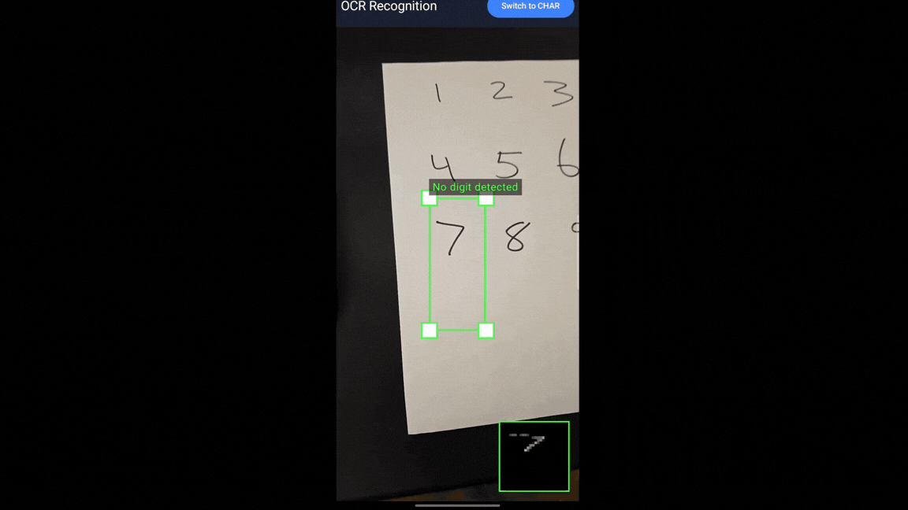

Featured Projects
Autonomous Navigation with Reinforcement Learning in NVIDIA Isaac Lab
Built a reinforcement learning simulation in NVIDIA Isaac Lab where a four-wheel vehicle uses LiDAR-based ray casting to navigate waypoints and avoid obstacles.
Trained with PPO via the RSL-RL framework to learn collision avoidance and path navigation in a physics-based simulation.


Violence Detection
Real-time violence detection system that classifies violent vs. non-violent actions using YOLO pose estimation and a custom CNN/Transformer model.
Includes dataset auditing, video preprocessing, model training, and a multi-stream inference client with configurable detection thresholds.
Viewer discretion advised. Click to reveal demo footage.
Violence detection test clips (safe for work until opened).Automatic License Plate Recognition System
End-to-end system that detects license plates in video with YOLO, crops them, and runs OCR with EasyOCR/PaddleOCR.
Separates detection and recognition into independent stages so each can be scaled or optimized separately.

Real-Time Alphanumeric OCR with CNN
Lightweight CNN for real-time alphanumeric character recognition from desktop webcam or Android camera streams.
Desktop app uses OpenCV and switchable digit-only / character+digit models. Android app runs on-device TensorFlow Lite inference with pinch-to-zoom and a draggable/resizable ROI box.



Full-Stack RSVP Management Platform
Full-stack RSVP platform for weddings and events, built as two interchangeable implementations: a Python/Flask branch with server-rendered HTML templates and a React/Cloudflare Workers single-page application.
Both versions support guest RSVP submission, dynamic party sizes, email notifications, and a protected admin dashboard. The Flask branch uses PostgreSQL and session-based Werkzeug auth. The React branch uses Vite + React Router with a Cloudflare Worker JSON API, Neon Postgres, HMAC-signed cookies, and Resend email alerts.


2D Multiplayer Tactical Shooter - Gunfight Engine
Real-time multiplayer tactical shooter built from scratch with a custom ECS game engine and a Java WebSocket server.
Serves a cross-platform HTML5/Canvas client at 60 TPS with matchmaking, projectile physics, line-of-sight, and mobile joystick controls.